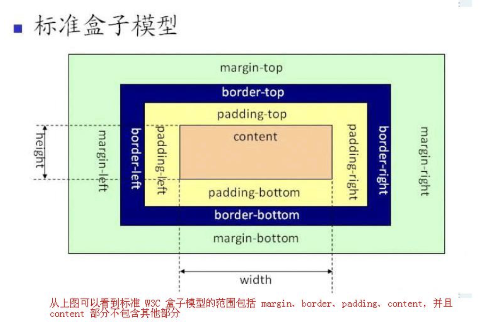
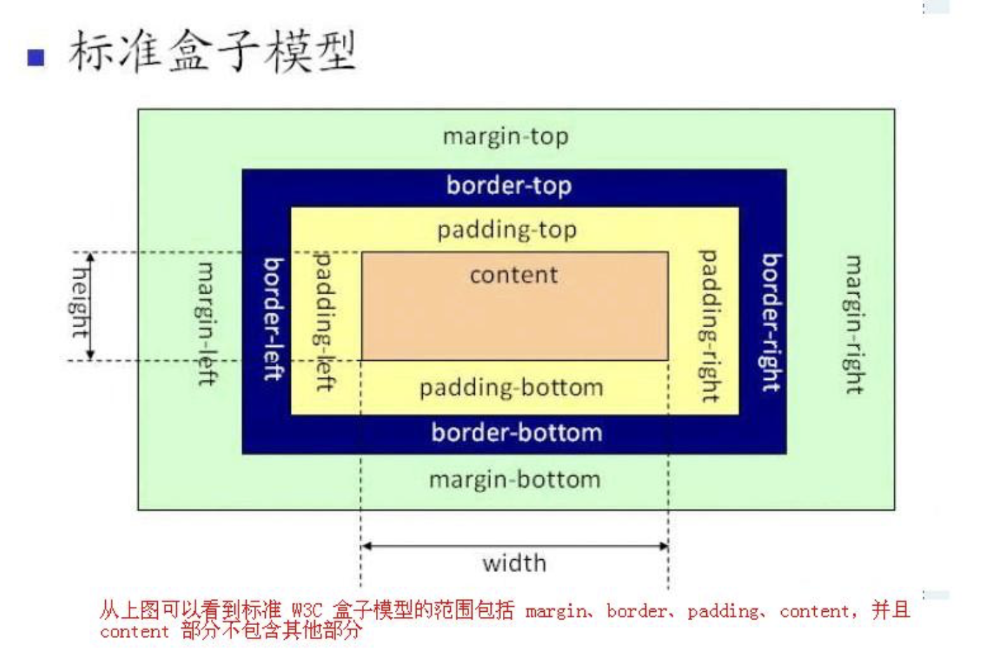

这是一些文字 这是一些文字 这是一些文字 这是一些文字 这是一些文字
这是一些文字 这是一些文字 这是一些文字 这是一些文字 这是一些文字
这是一些文字 这是一些文字 这是一些文字 这是一些文字 这是一些文字
这是一些文字 这是一些文字 这是一些文字 这是一些文字 这是一些文字
这是一些文字 这是一些文字 这是一些文字 这是一些文字 这是一些文字
这是一些文字 这是一些文字 这是一些文字 这是一些文字 这是一些文字
这是一些文字 这是一些文字 这是一些文字 这是一些文字 这是一些文字
这是一些文字 这是一些文字 这是一些文字 这是一些文字 这是一些文字
这是一些文字 这是一些文字 这是一些文字 这是一些文字 这是一些文字
这是一些文字 这是一些文字 这是一些文字 这是一些文字 这是一些文字
这是一些文字 这是一些文字 这是一些文字 这是一些文字 这是一些文字
这是一些文字 这是一些文字 这是一些文字 这是一些文字 这是一些文字
CSS float 属性定义元素在哪个方向浮动，浮动元素会生成一个块级框，
直到该块级框的外边缘碰到包含框或者其他的浮动框为止
CSS 的 Float（浮动），会使元素向左或向右移动，其周围的元素也会重新排列。
Float（浮动），往往是用于图像，但它在布局时一样非常有用。
元素怎样浮动
元素的水平方向浮动，意味着元素只能左右移动而不能上下移动。
一个浮动元素会尽量向左或向右移动，
直到它的外边缘碰到包含框或另一个浮动框的边框为止。
浮动元素之后的元素将围绕它。
浮动元素之前的元素将不会受到影响。
如果图像是右浮动，下面的文本流将环绕在它左边:
这是一些文字 这是一些文字 这是一些文字 这是一些文字 这是一些文字
这是一些文字 这是一些文字 这是一些文字 这是一些文字 这是一些文字
这是一些文字 这是一些文字 这是一些文字 这是一些文字 这是一些文字
这是一些文字 这是一些文字 这是一些文字 这是一些文字 这是一些文字
这是一些文字 这是一些文字 这是一些文字 这是一些文字 这是一些文字
这是一些文字 这是一些文字 这是一些文字 这是一些文字 这是一些文字
彼此相邻的浮动元素
如果你把几个浮动的元素放到一起，如果有空间的话，它们将彼此相邻。
在这里，我们对图片廊使用 float 属性
图片库
 

清除浮动 - 使用 clear
元素浮动之后，周围的元素会重新排列，为了避免这种情况，使用 clear 属性
clear 属性指定元素两侧不能出现浮动元素
使用 clear 属性往文本中添加图片廊
第二行